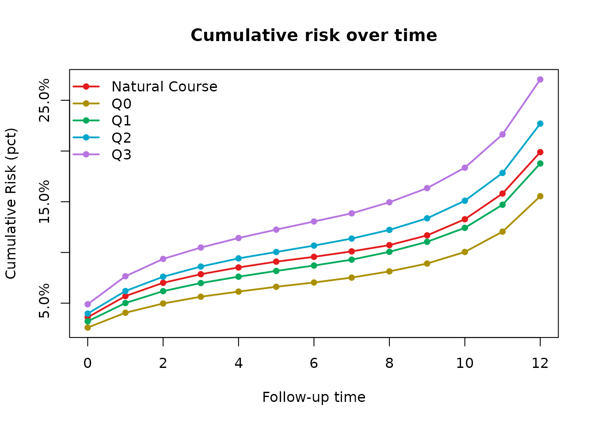
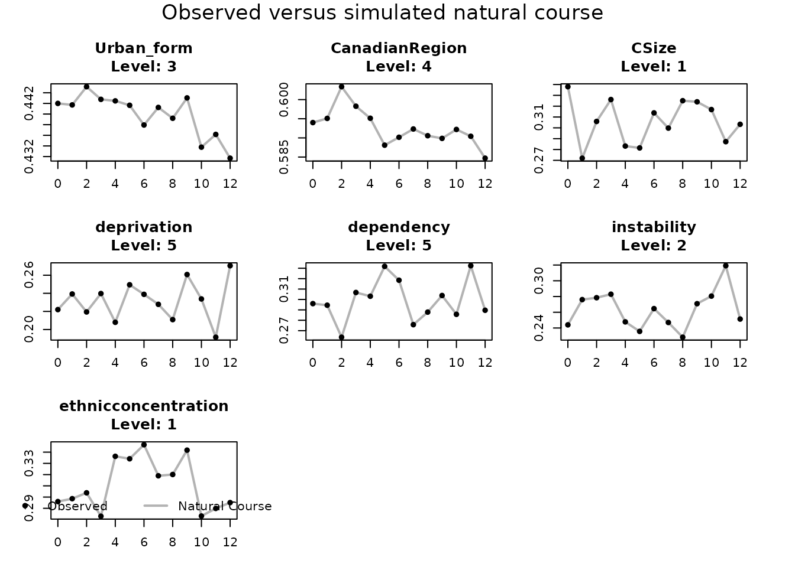

Overview
tvcQGComp estimates the survival effect of joint
interventions on a quantized time-varying exposure mixture. The core
workflow is:
- arrange the observed data in long person-period format;
- define the outcome, exposures, covariates, histories, and estimand;
- validate the data against that configuration;
- generate quantized intervention scenarios;
- run Monte Carlo g-computation; and
- interpret the point estimates and risk trajectories;
- inspect run-level and natural-course diagnostics; and
- use a subject-level bootstrap for confidence intervals.
This public release focuses on main-effect survival analyses with quantized exposures.
Required data structure
The input must contain one row per subject and follow-up interval. At minimum, the configured columns must identify:
| Role | Example |
|---|---|
| Subject identifier | UniqID |
| Interval start and end |
TimeInn, TimeOut
|
| Interval event indicator | status |
| Time-varying exposures |
BC, NIT, SO4,
NH4, OM
|
| Time-varying covariates |
CSize, Urban_form,
CanadianRegion, neighborhood indices |
| Baseline covariates |
sex, education, employment, and other demographic
variables |
Subject identifiers and interval times should uniquely identify rows.
Base variables used by model formulas must be present, correctly typed,
and supported at every time required by the simulation. Lagged formula
terms do not need to be stored in the input when
auto_history = TRUE.
Configure the analysis
The package includes the complete toy_data dataset used
in this example.
library(tvcQGComp)
data("toy_data", package = "tvcQGComp")
dat <- toy_data
dat$TimeOut <- as.integer(as.character(dat$TimeOut))
dim(dat)
#> [1] 5584 28
head(dat[c("UniqID", "TimeInn", "TimeOut", "status", "BC", "NIT")])
#> UniqID TimeInn TimeOut status BC NIT
#> 1 1 0 1 0 1.5651 1.1343
#> 2 1 1 2 0 0.9162 1.4713
#> 3 1 2 3 0 1.3029 1.5075
#> 4 1 3 4 0 1.0494 1.8727
#> 5 1 4 5 0 1.6890 1.2471
#> 6 1 5 6 0 0.4933 1.8635
exposures <- c("BC", "NIT", "SO4", "NH4", "OM")
active_tvc <- c(
"Urban_form", "CanadianRegion", "CSize", "deprivation",
"dependency", "instability", "ethnicconcentration"
)
baseline <- c(
"age", "income_inadequacy", "sex", "visible_minority",
"IndigenousIdentity", "marsth", "Education", "employment", "Occupation"
)
# These are formula term names only. auto_history creates the columns.
active_lag_terms <- paste0(active_tvc, "_lag1")
tvc_formulas <- setNames(lapply(active_tvc, function(response) {
reformulate(
c(
"TimeOut", "I(TimeOut^2)", baseline,
setdiff(active_lag_terms, paste0(response, "_lag1"))
),
response = response
)
}), active_tvc)
exposure_lag_terms <- paste0(exposures, "_lag1")
exposure_formulas <- setNames(lapply(exposures, function(response) {
reformulate(
c(
"TimeOut", "I(TimeOut^2)", baseline, active_tvc,
exposure_lag_terms
),
response = response
)
}), exposures)
cfg <- make_tvcqgcomp_config(
id = "UniqID",
time_in = "TimeInn",
time_out = "TimeOut",
outcome = "status",
exposures = exposures,
time_varying_covariates = active_tvc,
time_fixed_covariates = baseline,
factor_vars = c("income_inadequacy", active_tvc, baseline),
outcome_formula = reformulate(
c(exposures, "TimeOut", "I(TimeOut^2)", baseline, active_tvc),
response = "status"
),
tvc_formulas = tvc_formulas,
exposure_formulas = exposure_formulas,
exposure_types = setNames(rep("categorical", length(exposures)), exposures),
covtypes = c(
setNames(rep("categorical", length(active_tvc)), active_tvc)
),
q = 4,
exposome = "quantized",
natural_course = c("calibration", "modeled_exposome"),
auto_history = TRUE,
baselags = TRUE,
meta_target = c("HR", "RR", "RD")
)
data_valid <- validate_tvcqgcomp_data(dat, cfg)
data_valid
#> [1] TRUEThe configuration is the analysis contract. It should be finalized before fitting the point estimate or bootstrap so both stages use identical models and interventions. In this example, the seven neighborhood and urban-form covariates and the five quantized exposures are modeled forward for the natural course.
Define interventions
The input exposures are continuous. The package determines their quartile cutpoints internally, and the default helper assigns every internally quantized exposure to each level in turn.
scenarios <- generate_intervention_scenarios(cfg)
names(scenarios)
#> [1] "Q0" "Q1" "Q2" "Q3"Inspect scenarios before fitting. The scenario names
become labels in the result tables and plots.
Fit the point estimate
The website executes this demonstration with a deliberately small
Monte Carlo sample so each code block can be followed by its actual
output. Increase mc_size substantially for the final
analysis; the detailed implementation uses 10,000.
demo_mc_size <- 500L
fit <- tvcQGComp_survival(
data = dat,
config = cfg,
mc_size = demo_mc_size,
intervention_scenarios = scenarios,
seed = 1234,
verbose = FALSE
)
fit$risk_trajectory
#> scenario TimeInn TimeOut mean_risk mean_risk_per_1000 mean_survival
#> <char> <int> <int> <num> <num> <num>
#> 1: Q0 0 1 0.02595365 25.95365 0.9740464
#> 2: Q0 1 2 0.04055360 40.55360 0.9594464
#> 3: Q0 2 3 0.04968172 49.68172 0.9503183
#> 4: Q0 3 4 0.05636635 56.36635 0.9436336
#> 5: Q0 4 5 0.06141602 61.41602 0.9385840
#> 6: Q0 5 6 0.06616593 66.16593 0.9338341
#> 7: Q0 6 7 0.07038467 70.38467 0.9296153
#> 8: Q0 7 8 0.07522603 75.22603 0.9247740
#> 9: Q0 8 9 0.08135341 81.35341 0.9186466
#> 10: Q0 9 10 0.08907305 89.07305 0.9109270
#> 11: Q0 10 11 0.10047969 100.47969 0.8995203
#> 12: Q0 11 12 0.12052743 120.52743 0.8794726
#> 13: Q0 12 13 0.15545400 155.45400 0.8445460
#> 14: Q1 0 1 0.03214587 32.14587 0.9678541
#> 15: Q1 1 2 0.05012811 50.12811 0.9498719
#> 16: Q1 2 3 0.06186201 61.86201 0.9381380
#> 17: Q1 3 4 0.06982399 69.82399 0.9301760
#> 18: Q1 4 5 0.07612038 76.12038 0.9238796
#> 19: Q1 5 6 0.08179938 81.79938 0.9182006
#> 20: Q1 6 7 0.08711634 87.11634 0.9128837
#> 21: Q1 7 8 0.09291310 92.91310 0.9070869
#> 22: Q1 8 9 0.10064787 100.64787 0.8993521
#> 23: Q1 9 10 0.11051673 110.51673 0.8894833
#> 24: Q1 10 11 0.12425038 124.25038 0.8757496
#> 25: Q1 11 12 0.14705137 147.05137 0.8529486
#> 26: Q1 12 13 0.18772597 187.72597 0.8122740
#> 27: Q2 0 1 0.03971721 39.71721 0.9602828
#> 28: Q2 1 2 0.06197055 61.97055 0.9380295
#> 29: Q2 2 3 0.07607616 76.07616 0.9239238
#> 30: Q2 3 4 0.08610918 86.10918 0.9138908
#> 31: Q2 4 5 0.09415239 94.15239 0.9058476
#> 32: Q2 5 6 0.10046089 100.46089 0.8995391
#> 33: Q2 6 7 0.10676393 106.76393 0.8932361
#> 34: Q2 7 8 0.11369856 113.69856 0.8863014
#> 35: Q2 8 9 0.12226371 122.26371 0.8777363
#> 36: Q2 9 10 0.13367196 133.67196 0.8663280
#> 37: Q2 10 11 0.15098943 150.98943 0.8490106
#> 38: Q2 11 12 0.17840201 178.40201 0.8215980
#> 39: Q2 12 13 0.22700029 227.00029 0.7729997
#> 40: Q3 0 1 0.04892710 48.92710 0.9510729
#> 41: Q3 1 2 0.07655225 76.55225 0.9234477
#> 42: Q3 2 3 0.09361902 93.61902 0.9063810
#> 43: Q3 3 4 0.10485622 104.85622 0.8951438
#> 44: Q3 4 5 0.11423212 114.23212 0.8857679
#> 45: Q3 5 6 0.12252430 122.52430 0.8774757
#> 46: Q3 6 7 0.13053145 130.53145 0.8694685
#> 47: Q3 7 8 0.13857739 138.57739 0.8614226
#> 48: Q3 8 9 0.14951616 149.51616 0.8504838
#> 49: Q3 9 10 0.16342582 163.42582 0.8365742
#> 50: Q3 10 11 0.18354747 183.54747 0.8164525
#> 51: Q3 11 12 0.21639798 216.39798 0.7836020
#> 52: Q3 12 13 0.27054492 270.54492 0.7294551
#> scenario TimeInn TimeOut mean_risk mean_risk_per_1000 mean_survival
#> <char> <int> <int> <num> <num> <num>
#> mean_survival_per_1000
#> <num>
#> 1: 974.0464
#> 2: 959.4464
#> 3: 950.3183
#> 4: 943.6336
#> 5: 938.5840
#> 6: 933.8341
#> 7: 929.6153
#> 8: 924.7740
#> 9: 918.6466
#> 10: 910.9270
#> 11: 899.5203
#> 12: 879.4726
#> 13: 844.5460
#> 14: 967.8541
#> 15: 949.8719
#> 16: 938.1380
#> 17: 930.1760
#> 18: 923.8796
#> 19: 918.2006
#> 20: 912.8837
#> 21: 907.0869
#> 22: 899.3521
#> 23: 889.4833
#> 24: 875.7496
#> 25: 852.9486
#> 26: 812.2740
#> 27: 960.2828
#> 28: 938.0295
#> 29: 923.9238
#> 30: 913.8908
#> 31: 905.8476
#> 32: 899.5391
#> 33: 893.2361
#> 34: 886.3014
#> 35: 877.7363
#> 36: 866.3280
#> 37: 849.0106
#> 38: 821.5980
#> 39: 772.9997
#> 40: 951.0729
#> 41: 923.4477
#> 42: 906.3810
#> 43: 895.1438
#> 44: 885.7679
#> 45: 877.4757
#> 46: 869.4685
#> 47: 861.4226
#> 48: 850.4838
#> 49: 836.5742
#> 50: 816.4525
#> 51: 783.6020
#> 52: 729.4551
#> mean_survival_per_1000
#> <num>
fit$meta_effect_summary
#> meta_target estimate increment
#> <char> <num> <num>
#> 1: HR 1.24550664 1
#> 2: RR 1.20271446 1
#> 3: RD 0.03814305 1The returned object contains fitted nuisance models, simulated intervention data, risk summaries, natural-course outputs when requested, and the pooled second-stage model.
fit$meta_effect_summary is the main point-estimate
table, with one row for each requested target. HR and RR estimates are
reported on the ratio scale; RD estimates are reported on the absolute
risk-difference scale. Each estimate represents a one-unit increase in
the joint quantile intervention across all mixture components. These are
the non-bootstrap estimates; percentile confidence intervals are added
using the bootstrap later in this workflow.
Inspect risk trajectories
risk_curves <- as_risk_curve_df(fit)
head(risk_curves)
#> TimeInn TimeOut mean_risk mean_risk_per_1000 mean_survival mean_survival_per_1000
#> <int> <int> <num> <num> <num> <num>
#> 1: 0 1 0.03606804 36.06804 0.9639320 963.9320
#> 2: 1 2 0.05695917 56.95917 0.9430408 943.0408
#> 3: 2 3 0.07009637 70.09637 0.9299036 929.9036
#> 4: 3 4 0.07857087 78.57087 0.9214291 921.4291
#> 5: 4 5 0.08522558 85.22558 0.9147744 914.7744
#> 6: 5 6 0.09093655 90.93655 0.9090634 909.0634
#> scenario
#> <char>
#> 1: Natural Course
#> 2: Natural Course
#> 3: Natural Course
#> 4: Natural Course
#> 5: Natural Course
#> 6: Natural Course
plot_cumulative_risk_trajectory(fit)
Risk trajectories are useful for understanding when scenarios begin to separate. Final HR, RR, and RD estimates come from their configured second-stage meta-models.
Check the fitted run
Before interpreting the effect estimates, check the structure and numerical behavior of the fitted run.
run_checks <- diagnose_tvcqgcomp_run(fit)
run_checks$summary
#> mc_ok natural_ok intervention_ok scenario_order_consistent
#> <lgcl> <lgcl> <lgcl> <lgcl>
#> 1: TRUE TRUE TRUE TRUE
run_checks$scenario_exposure_checks
#> scenario all_exposures_constant joint_effect_unique
#> <char> <lgcl> <int>
#> 1: Q0 TRUE 1
#> 2: Q1 TRUE 1
#> 3: Q2 TRUE 1
#> 4: Q3 TRUE 1
run_checks$final_risk_table
#> scenario final_risk joint_effect risk_rank
#> <char> <num> <num> <int>
#> 1: Q0 0.1554540 0 1
#> 2: Q1 0.1877260 1 2
#> 3: Q2 0.2270003 2 3
#> 4: Q3 0.2705449 3 4Review warnings, missing outputs, scenario completeness, Monte Carlo panel balance, exposure constancy under static interventions, and numerical irregularities. Resolve substantive problems before proceeding to inference.
Check natural-course drift
The natural-course simulation should reproduce the observed
trajectories of the modeled time-varying covariates reasonably well.
Because the configuration requested modeled_exposome,
fit$natural contains forward-simulated time-varying
covariates and exposures. Supply the observed data as the comparison
target; the fitted object supplies the natural-course simulation and
configuration.
drift <- diagnose_tvcqgcomp_drift(
observed_data = dat,
run_obj = fit
)
drift$categorical_summary
#> variable n_time n_levels max_abs_diff p95_abs_diff mean_abs_diff
#> <char> <int> <int> <num> <num> <num>
#> 1: CSize 13 6 0 0 0
#> 2: CanadianRegion 13 6 0 0 0
#> 3: Urban_form 13 5 0 0 0
#> 4: dependency 13 5 0 0 0
#> 5: deprivation 13 5 0 0 0
#> 6: ethnicconcentration 13 5 0 0 0
#> 7: instability 13 5 0 0 0
drift$continuous_summary
#> Null data.table (0 rows and 0 cols)
plot_tvcqgcomp_drift(
drift_obj = drift,
continuous_stat = "mean",
categorical_stat = "level_proportion",
main = "Observed versus simulated natural course"
)
For categorical variables, the summary reports differences in time-specific level proportions. For continuous variables, it reports differences in means, standard deviations, and selected quantiles. Material drift can indicate model misspecification, unsupported simulated histories, incorrect variable types, or unstable extrapolation. These diagnostics should guide model revision; they do not replace the causal assumptions required for identification.
Bootstrap uncertainty
Use the same data, configuration, and intervention scenarios as the point estimate. Resampling is performed at the subject level to preserve each participant’s longitudinal history.
The website uses five replicates only to demonstrate the returned output. This is not sufficient for inference; use a substantially larger number, such as 500, for the final analysis.
demo_n_boot <- 5L
boot <- tvcQGComp_survival_boot(
data = dat,
config = cfg,
n_boot = demo_n_boot,
mc_size = demo_mc_size,
intervention_scenarios = scenarios,
seed = 1234,
parallel = FALSE,
checkpoint_file = NULL,
verbose = FALSE,
stop_on_error = FALSE
)
boot_summary <- summarize_tvcqgcomp_bootstrap(boot)
boot_summary
#> term estimate se ci_ll_95 ci_ul_95 n_success
#> <char> <num> <num> <num> <num> <int>
#> 1: coef_HR_(Intercept) -3.50187417 0.38340268 -3.89175969 -2.99465050 5
#> 2: coef_HR_joint_effect 0.18488753 0.21857684 -0.10188179 0.45683558 5
#> 3: coef_HR_factor(TimeInn)1 -0.56435020 0.08020084 -0.64078007 -0.44483673 5
#> 4: coef_HR_factor(TimeInn)2 -1.07630341 0.19126345 -1.26589003 -0.79378892 5
#> 5: coef_HR_factor(TimeInn)3 -1.47982308 0.23825812 -1.65723745 -1.10967516 5
#> 6: coef_HR_factor(TimeInn)4 -1.73525198 0.26870195 -1.96256651 -1.32631015 5
#> 7: coef_HR_factor(TimeInn)5 -1.86173110 0.26922498 -2.03724215 -1.44030408 5
#> 8: coef_HR_factor(TimeInn)6 -1.90183550 0.30511128 -2.09417171 -1.42315627 5
#> 9: coef_HR_factor(TimeInn)7 -1.79763441 0.29581123 -1.98279345 -1.33410603 5
#> 10: coef_HR_factor(TimeInn)8 -1.58847556 0.29815301 -1.75963126 -1.12113128 5
#> 11: coef_HR_factor(TimeInn)9 -1.24426121 0.25912021 -1.40042987 -0.83821122 5
#> 12: coef_HR_factor(TimeInn)10 -0.77184897 0.23968286 -0.97713105 -0.41048054 5
#> 13: coef_HR_factor(TimeInn)11 -0.18404740 0.23164373 -0.43438915 0.13170468 5
#> 14: coef_HR_factor(TimeInn)12 0.49404472 0.19877594 0.24443620 0.69640769 5
#> 15: coef_RR_(Intercept) -1.81073762 0.29938569 -2.15374300 -1.39508094 5
#> 16: coef_RR_joint_effect 0.15194618 0.17878740 -0.08518772 0.37111334 5
#> 17: coef_RD_(Intercept) 0.16568285 0.05707639 0.10555797 0.24818610 5
#> 18: coef_RD_joint_effect 0.03083065 0.03763915 -0.01896524 0.07716766 5Use a small number of replicates only when testing the pipeline. The final analysis should use enough successful replicates to estimate percentile limits with adequate stability. Store checkpoint files outside the package source directory when preparing a public release.
Suggested reporting checklist
- Define the longitudinal time scale and event indicator.
- List all mixture components and quantization levels.
- Describe the natural-course mode and intervention scenarios.
- State each requested second-stage meta-model target.
- Report the Monte Carlo size, bootstrap settings, and random seeds.
- Report the requested and successful numbers of bootstrap replicates.
- Summarize run-level checks, natural-course drift, and any model revisions.